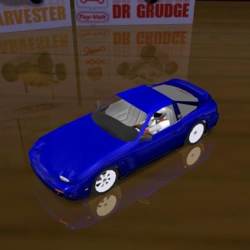

✖
☰
☰
Cars I
☆ designates co-authors, ＋ designates add-ons
horizontal swipe or arrows <- -> for quick page nav
Cars I
Mitsubishi Eclipse 'Tuner'
Nissan Silvia S14 'Drifter'
RC Bandit Pro
Lancer Evolution VII (NFSU2)
Porsche 917K
☆Manmountain
＋
Acura RSX
Honda Accord LX
＋

Nissan 240SX
DeTomaso Mangusta
Ford Puma
☆Aeon
Cizeta-Moroder V16T
Chevrolet Cavalier